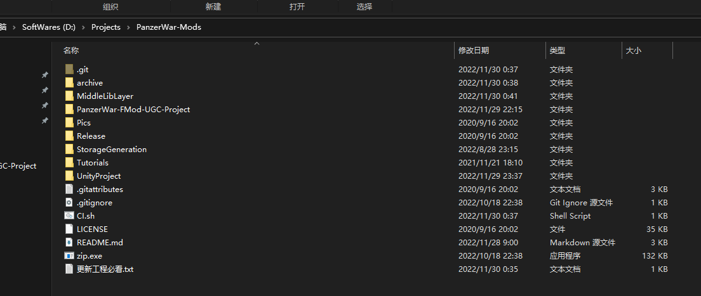
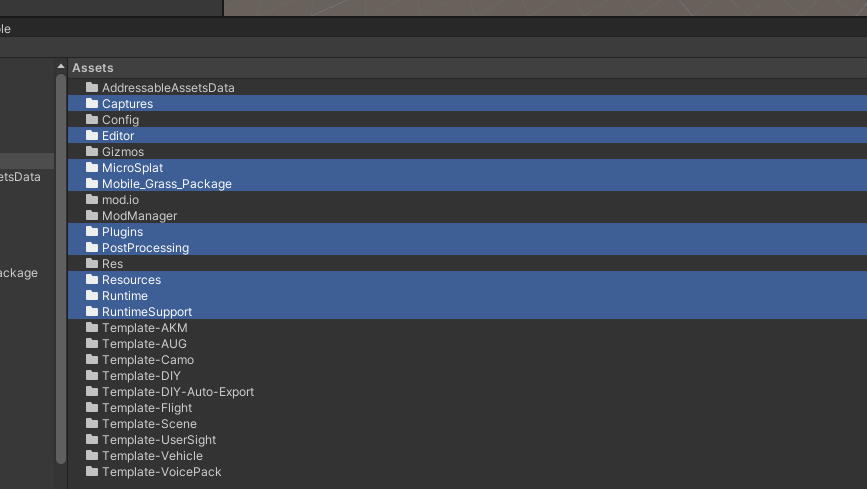
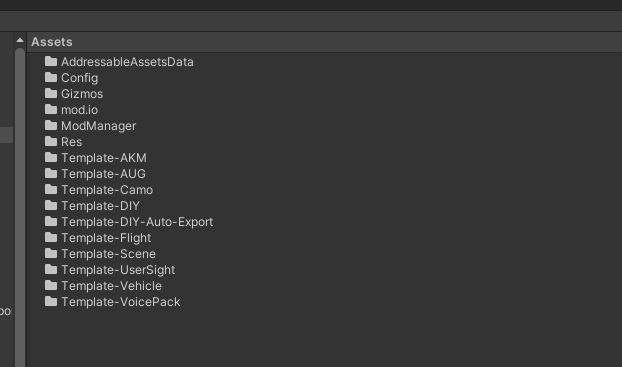
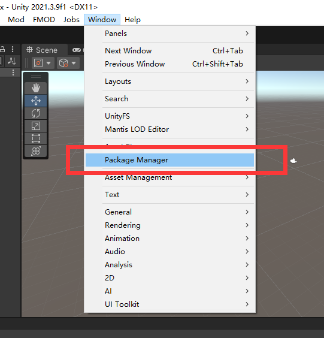
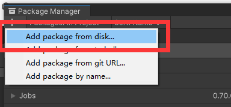
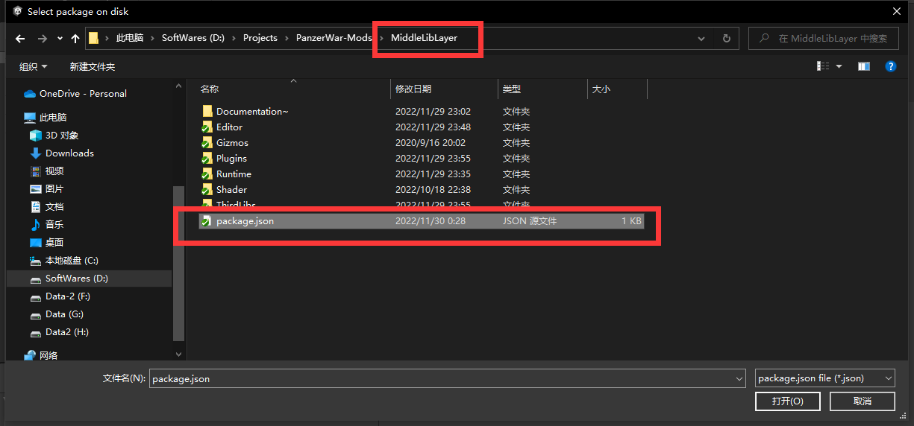
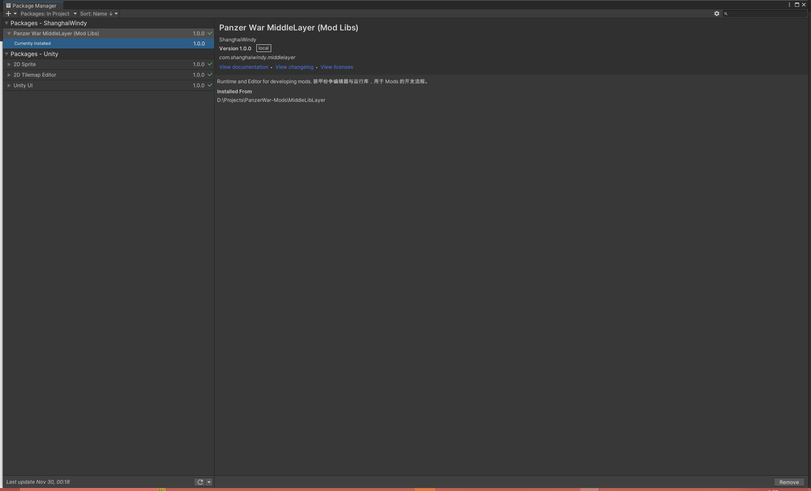

0.3.2 Migration 旧工程迁移新工程
Introduction 概述
To simplify game editor update. All the codes are removed from project and moved to MiddleLibLayer folder. So, if we want to update game editor, only need to delete old MiddleLibLayer folder and copy new MiddleLibLayer folder to original folder.
为了简化编辑器功能的更新流程，游戏相关的代码与工程进行了分离。 Unity Project 将只包含数据，而游戏相关的代码则放在了 MiddleLibLayer 目录下。若需要使用新的编辑器功能，则只需要删除旧的 MiddleLibLayer 目录，然后复制新的 MiddleLibLayer 到原目录即可。
Old Project Migration 老工程迁移
旧工程定义:
- UnityProject 文件夹下存在 Runtime-Supports 文件
Q: How to define old project?
A: If you have Runtime-Supports folder under UnityProject, then it is an old project.
1. Download Latest Project 下载最新工程
Download the latest project，you can refer this document.
下载最新的工程。

2. Open Your Old Project 打开你的旧工程
**Backup your project **then delete the following selected folders
备份你的工程，然后删除如图选中的文件夹


Add the following package from local. It is located in where you download in Step.1.
添加以下本地 Package 。 他位于本地，且路径为你在步骤.1 你下载的工程路径中。



When package is showed, it means upgrade is finished.
显示如下文字，就说明升级完成
